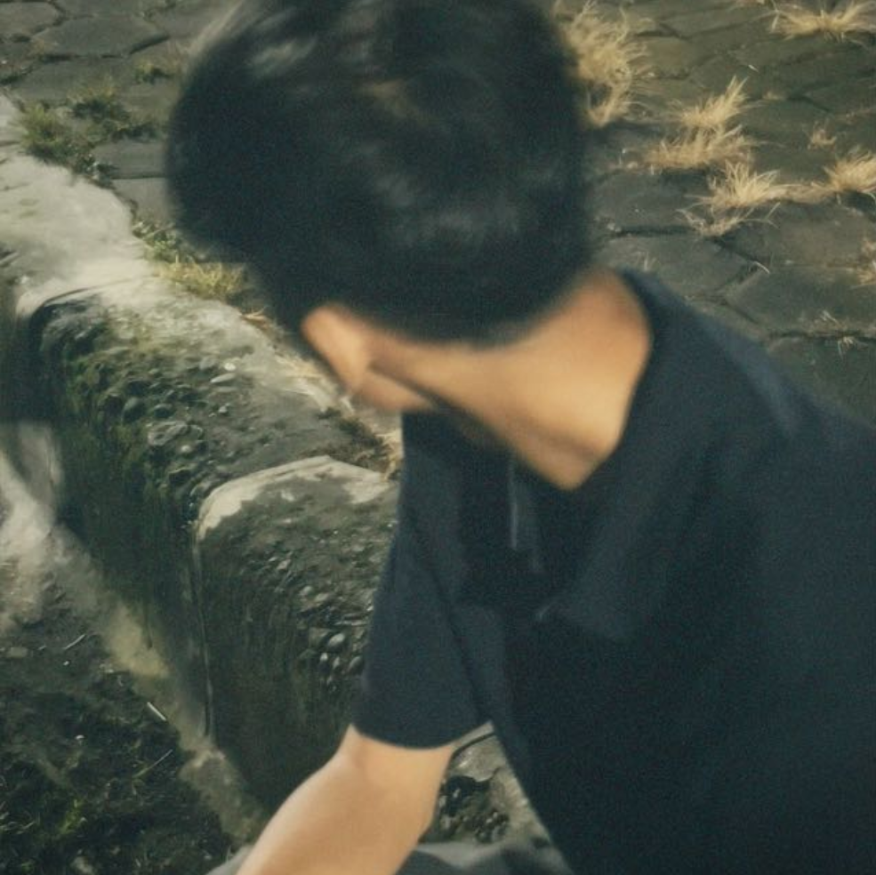

Tentang Peta Desa Digital
Misi kami adalah memodernisasi administrasi desa melalui teknologi pemetaan geospasial yang akurat dan mudah diakses.
Visi Kami
Menjadi platform pemetaan desa terdepan yang memberdayakan setiap desa di Indonesia untuk perencanaan dan pengelolaan sumber daya yang lebih transparan dan efisien.
Misi Kami
- Menyediakan data geospasial yang mutakhir dan akurat.
- Mengembangkan antarmuka pengguna yang intuitif dan minimalis.
- Memberikan pelatihan dan dukungan teknis kepada perangkat desa.
Mahasiswa Amikom Purwokerto
Berdedikasi tinggi dengan digitalisasi untuk memajukan desa.

Fatih Ali Zacky
Lead Developer
Hubungi Kami
Universitas Amikom Purwokerto
Jln. Let. Jend. Pol. Soemarto (depan SPN Purwokerto) Watumas Purwanegara Purwokerto
Email Dukungan
info@petadesa.id fatihaly2020@gmail.com felsainfodesa@gmail.com